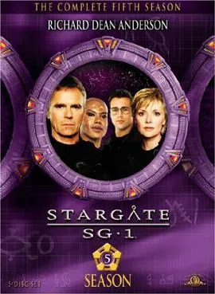

The genetics
The episode turns on a multi-generational genetic experiment. The Goa'uld Nirrti has been engineering the people of Hanka to produce the 'Hok'tar', an advanced human who would make a perfect host for a Goa'uld. A retrovirus rewrites the DNA of adolescents, who are taken to her hidden laboratory, studied and returned; Cassandra, the last survivor of Hanka, is the culmination, and her transformation brings collapse and telekinetic powers. Nirrti is a clear villain, experimenting on a whole population without consent and exterminating it to protect her secret; she cures Cassandra only under threat and promises to continue. On the other side, the base physician, Dr. Fraiser, diagnoses the retrovirus and fights for her adopted daughter. Retroviruses do insert genes into host cells, which makes them real tools of gene therapy, but genes that confer telekinesis are science fiction.
How genetics is portrayed
- Overall portrayal of genetics
- negative Genetic engineering is the instrument of an alien tyrant's scheme to breed better hosts, and the heroes' role is to resist it.
- Outcome of the genetic intervention
- negative The experiments subject a population to non-consensual genetic change and end in its extermination; Cassandra nearly dies, though she is cured at the end.
- Nirrti
- villain Aim: power (negative). Nirrti engineers Hanka's people over generations with a retrovirus to create a perfect Goa'uld host, then exterminates them to keep her success from rival System Lords. She cures Cassandra only when threatened and vows to continue.
The story
On the fourth anniversary of her arrival on Earth, Cassandra collapses and asks to be taken to a forest; Dr. Janet Fraiser finds that a retrovirus is transforming her DNA. Footage from an earlier mission to Cassandra's home planet, Hanka, shows that its young people used to collapse at sixteen, go to a forest and return cured. SG-1 visits the forest and finds a hidden Goa'uld laboratory and a tablet reading 'Hok'tar', 'advanced human'. As Cassandra develops telekinetic powers, Daniel Jackson links the case to the System Lord Nirrti, who experimented on Hanka's people for generations to create a perfect Goa'uld host and wiped them out to hide her success. Nirrti, who has followed the team to Earth while invisible, is captured. Under Fraiser's threat she cures Cassandra in exchange for her freedom, warning that she will not abandon her research.